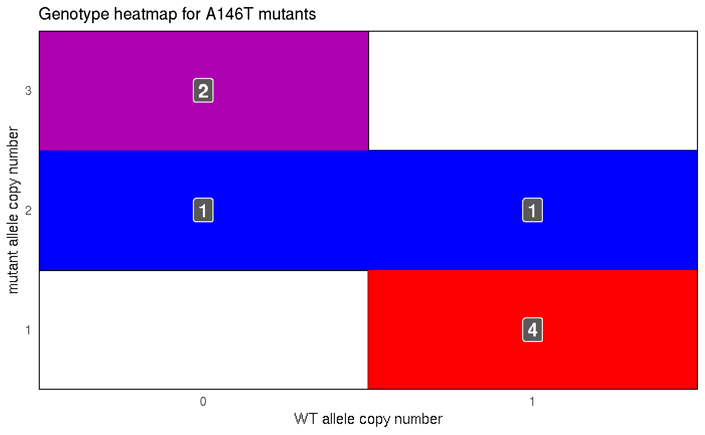
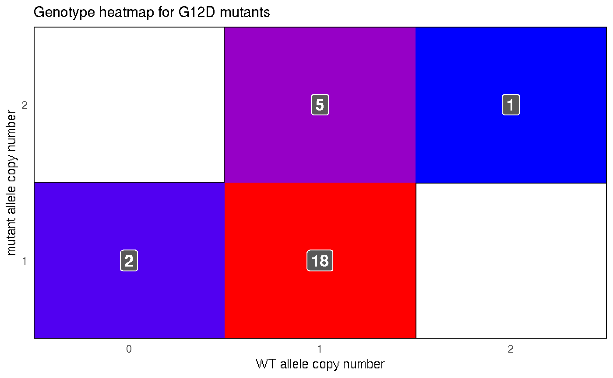

d01-plotresults.RmdPer the scope of this study, only the COAD and READ data were further analyzed. The number of samples with each allele were counted. Finally, the few negative numbers were set to 0.
cn_tib <- allele_data_filt %>%
filter(project_id %in% c("TCGA-COAD", "TCGA-READ")) %>%
group_by(aa_mod) %>%
mutate(allele_count = n_distinct(common_id)) %>%
ungroup() %>%
mutate(cn_mut = ifelse(cn_mut < 0, 0, cn_mut),
cn_wt = ifelse(cn_wt < 0, 0, cn_wt),
codon = as.numeric(str_extract(aa_mod, "[:digit:]+")))The following plot shows the copy number for all mutant KRAS alleles detected. The coloration is associated with the codon of the mutation. Note, this is the copy number of the mutant allele, thus not including the other allele of the patient.
cn_tib %>%
mutate(aa_mod = forcats::fct_reorder(aa_mod, codon)) %>%
ggplot(aes(x = aa_mod, y = cn_mut)) +
geom_jitter(aes(color = as.factor(codon)), width = 0.1, height = 0) +
labs(x = "",
y = "Mutant allele copy number",
title = "COADREAD Mutant Allele Copy Number",
color = "codon") +
theme_classic() +
theme(panel.grid.major.y = element_line(color = "grey60"),
panel.grid.minor.y = element_line(color = "grey75", linetype = 2),
plot.title = element_text(hjust = 0.5, face = "bold", size = 14),
axis.text.x = element_text(angle = 45, hjust = 1))The following plot examines the copy number alterations of the mutant and WT alleles of tumor samples with either KRAS G12D and A146T mutations. Each point represents an allele, either mutant or WT for samples with either mutation of interest. The y-axis is the copy number of the allele. Two points connected by a line are from the same tumor sample. The coloration is correlated to the difference between the mutant and WT allele in the sample. Thus, the more red, the greater the mutant allele copy number is compared to the WT allele copy number.
# colors
red_col <- "red"
blue_col <- "blue"
cn_tib %>%
filter(aa_mod %in% c("A146T", "G12D")) %>%
mutate(diff = cn_mut - cn_wt) %>%
ggplot() +
facet_grid(. ~ aa_mod) +
geom_segment(aes(x = "mutant", xend = "wild type",
y = cn_mut, yend = cn_wt,
color = diff)) +
geom_point(aes(x = "mutant", y = cn_mut, color = diff), size = 1) +
geom_point(aes(x = "wild type", y = cn_wt, color = diff), size = 1) +
scale_color_gradient(low = blue_col, high = red_col) +
theme(panel.background = element_rect(fill = "white"),
panel.grid.major = element_line(color = "grey85"),
legend.key.height = unit(0.2, "in"),
legend.key.width = unit(0.1, "in"),
axis.ticks = element_line("grey85"),
strip.background = element_blank(),
strip.text.x = element_blank()) +
labs(x = "allele", y = "copy number",
title = "Copy number of both alleles in KRAS mutants",
color = "CN difference")The plot below shows the genotypes of the tumor samples with either KRAS A146T or G12D mutations. It is a heatmap to highlight the more frequent genotype for each set of mutants. The WT allele copy number is shown on the x-axis and the mutant allele copy number is shown on the y-axis.
The follow chunk is a function to which "A146T" and "G12D" are passed as allele.

